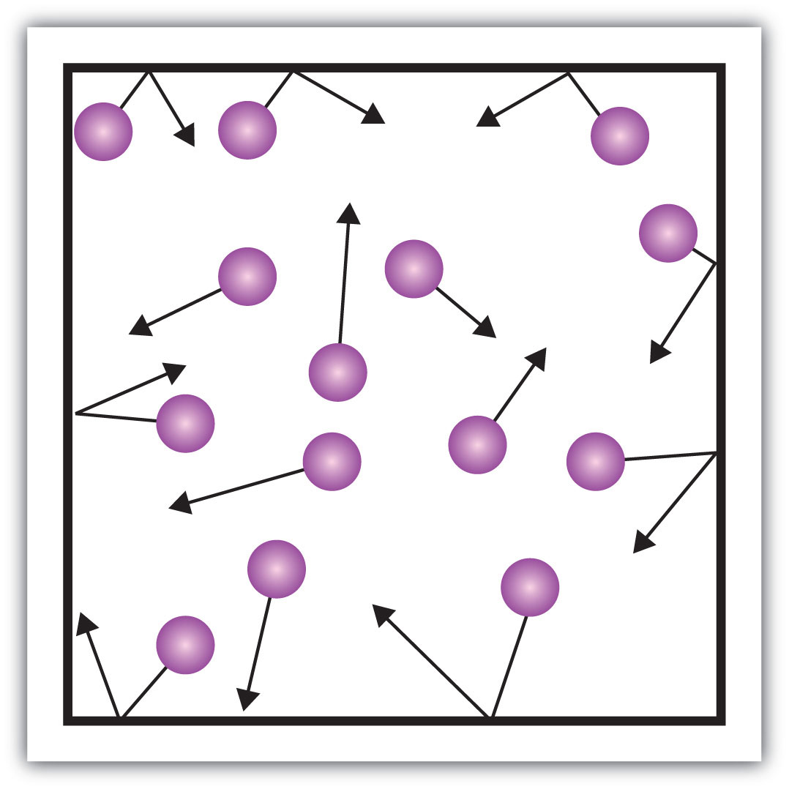

We normally experience carbon dioxide (CO2) as a gas, but if it were cooled down to about −78°C, it would become a solid. The everyday term for solid carbon dioxide is dry ice.
Why “dry” ice? Solid carbon dioxide is called dry ice because it converts from a solid to a gas directly, without going through the liquid phase, in a process called sublimation. Thus, there is no messy liquid phase to worry about. Although it is a novelty, dry ice has some potential dangers. Because it is so cold, it can freeze living tissues very quickly, so people handling dry ice should wear special protective gloves. The cold carbon dioxide gas is also heavier than air (because it is cold and more dense), so people in the presence of dry ice should be in a well-ventilated area.
Dry ice has several common uses. Because it is so cold, it is used as a refrigerant to keep other things cold or frozen (e.g., meats or ice cream). In the medical field, dry ice is used to preserve medical specimens, blood products, and drugs. It also has dermatological applications (e.g., freezing off warts). Organs for transplant are kept cool with dry ice until the recipient of the new organ is ready for surgery. In this respect, carbon dioxide is much like water—more than one phase of the same substance has significant uses in the real world.
Most of us are familiar with the three phases of matter: solid, liquid, and gas. Indeed, we addressed the energy changes involved in phase changes in Chapter 7 "Energy and Chemical Processes". The picture on this page shows the substance we are probably most familiar with as having those three phases: water. In everyday life, we commonly come in contact with water as a solid (ice), as a liquid, and as a gas (steam). All we have to do is change the conditions of the substance—typically temperature—and we can change the phase from solid to liquid to gas and back again.
Under the proper conditions of temperature and pressure, many substances—not only water—can experience the three different phases (Figure 8.1 "Water"). An understanding of the phases of matter is important for our understanding of all matter. In this chapter, we will explore the three phases of matter.
A phaseA form of matter that has the same physical properties throughout. is a certain form of matter that includes a specific set of physical properties. That is, the atoms, the molecules, or the ions that make up the phase do so in a consistent manner throughout the phase. As mentioned in Chapter 1 "Chemistry, Matter, and Measurement", science recognizes three stable phases: the solid phase, in which individual particles can be thought of as in contact and held in place; the liquid phase, in which individual particles are in contact but moving with respect to each other; and the gas phase, in which individual particles are separated from each other by relatively large distances. Not all substances will readily exhibit all phases. For example, carbon dioxide does not exhibit a liquid phase unless the pressure is greater than about six times normal atmospheric pressure. Other substances, especially complex organic molecules, may decompose at higher temperatures, rather than becoming a liquid or a gas.
For many substances, there are different arrangements the particles can take in the solid phase, depending on temperature and pressure.
Which phase a substance adopts depends on the pressure and the temperature it experiences. Of these two conditions, temperature variations are more obviously related to the phase of a substance. When it is very cold, H2O exists in the solid form as ice. When it is warmer, the liquid phase of H2O is present. At even higher temperatures, H2O boils and becomes steam.
Pressure changes can also affect the presence of a particular phase (as we indicated for carbon dioxide), but its effects are less obvious most of the time. We will mostly focus on the temperature effects on phases, mentioning pressure effects only when they are important. Most chemical substances follow the same pattern of phases when going from a low temperature to a high temperature: the solid phase, then the liquid phase, and then the gas phase. However, the temperatures at which these phases are present differ for all substances and can be rather extreme. Table 8.1 "Temperature Ranges for the Three Phases of Various Substances" shows the temperature ranges for solid, liquid, and gas phases for three substances. As you can see, there is extreme variability in the temperature ranges.
Table 8.1 Temperature Ranges for the Three Phases of Various Substances
| Substance | Solid Phase Below | Liquid Phase Above | Gas Phase Above |
|---|---|---|---|
| hydrogen (H2) | −259°C | −259°C | −253°C |
| water (H2O) | 0°C | 0°C | 100°C |
| sodium chloride (NaCl) | 801°C | 801°C | 1413°C |
| The melting point of a substance is the temperature that separates a solid and a liquid. The boiling point of a substance is the temperature that separates a liquid and a gas. | |||
What accounts for this variability? Why do some substances become liquids at very low temperatures, while others require very high temperatures before they become liquids? It all depends on the strength of the intermolecular interactionsA force of attraction between different molecules. between the particles of substances. (Although ionic compounds are not composed of discrete molecules, we will still use the term intermolecular to include interactions between the ions in such compounds.) Substances that experience strong intermolecular interactions require higher temperatures to become liquids and, finally, gases. Substances that experience weak intermolecular interactions do not need much energy (as measured by temperature) to become liquids and gases and will exhibit these phases at lower temperatures.
Substances with the highest melting and boiling points have covalent network bondingA type of interaction in which all the atoms in a sample are covalently bonded to other atoms.. This type of intermolecular interaction is actually a covalent bond. (For more information about covalent bonding, see Chapter 4 "Covalent Bonding and Simple Molecular Compounds".) In these substances, all the atoms in a sample are covalently bonded to other atoms; in effect, the entire sample is essentially one large molecule. Many of these substances are solid over a large temperature range because it takes a lot of energy to disrupt all the covalent bonds at once. One example of a substance that shows covalent network bonding is diamond (Figure 8.2 "Diamond"), which is a form of pure carbon. At temperatures over 3,500°C, diamond finally vaporizes into gas-phase atoms.
The strongest force between any two particles is the ionic bond, in which two ions of opposing charge are attracted to each other. (For more information about ionic bonding, see Chapter 3 "Ionic Bonding and Simple Ionic Compounds".) Thus, ionic interactionsAn attraction due to ions of opposite charges. between particles are another type of intermolecular interaction. Substances that contain ionic interactions are relatively strongly held together, so these substances typically have high melting and boiling points. Sodium chloride (Figure 8.3 "Sodium Chloride") is an example of a substance whose particles experience ionic interactions (Table 8.1 "Temperature Ranges for the Three Phases of Various Substances").
Many substances that experience covalent bonding exist as discrete molecules. In many molecules, the electrons that are shared in a covalent bond are not shared equally between the two atoms in the bond. Typically, one of the atoms attracts the electrons more strongly than the other, leading to an unequal sharing of electrons in the bond. This idea is illustrated in Figure 8.4 "Polar Covalent Bonds", which shows a diagram of the covalent bond in hydrogen fluoride (HF). The fluorine atom attracts the electrons in the bond more than the hydrogen atom does. The result is an unequal distribution of electrons in the bond, favoring the fluorine side of the covalent bond. Because of this unequal distribution, the fluorine side of the covalent bond actually takes on a partial negative charge (indicated by the δ− in Figure 8.4 "Polar Covalent Bonds"), while the hydrogen side of the bond, being electron deficient, takes on a partial positive charge (indicated by the δ+ in Figure 8.4 "Polar Covalent Bonds"). A covalent bond that has an unequal sharing of electrons is called a polar covalent bondA covalent bond that has an unequal sharing of electrons.. (A covalent bond that has an equal sharing of electrons, as in a covalent bond with the same atom on each side, is called a nonpolar covalent bondA covalent bond that has an equal sharing of electrons..) A molecule with a net unequal distribution of electrons in its covalent bonds is a polarA molecule with a net unequal distribution of electrons in its covalent bonds. molecule. HF is an example of a polar molecule.
Figure 8.4 Polar Covalent Bonds

The electrons in the HF molecule are not equally shared by the two atoms in the bond. Because the fluorine atom has nine protons in its nucleus, it attracts the negatively charged electrons in the bond more than the hydrogen atom does with its one proton in its nucleus. Thus, electrons are more strongly attracted to the fluorine atom, leading to an imbalance in the electron distribution between the atoms. The fluorine side of the bond picks up a partial overall negative charge (represented by the δ− in the diagram), while the hydrogen side of the bond has an overall partial positive charge (represented by the δ+ in the diagram). Such a bond is called a polar covalent bond.
The charge separation in a polar covalent bond is not as extreme as is found in ionic compounds, but there is a related result: oppositely charged ends of different molecules will attract each other. This type of intermolecular interaction is called a dipole-dipole interactionAn attraction between polar molecules.. Many molecules with polar covalent bonds experience dipole-dipole interactions. The covalent bonds in some molecules are oriented in space in such a way that the bonds in the molecules cancel each other out. The individual bonds are polar, but the overall molecule is not polar; rather, the molecule is nonpolar. Such molecules experience little or no dipole-dipole interactions. Carbon dioxide (CO2) and carbon tetrachloride (CCl4) are examples of such molecules (Figure 8.5 "Nonpolar Molecules").
Figure 8.5 Nonpolar Molecules

Although the individual bonds in both CO2 and CCl4 are polar, their effects cancel out because of the spatial orientation of the bonds in each molecule. As a result, such molecules experience little or no dipole-dipole interaction.
The H–F, O–H, and N–H bonds are strongly polar; in molecules that have these bonds, particularly strong dipole-dipole interactions (as strong as 10% of a true covalent bond) can occur. Because of this strong interaction, hydrogen bondingA particularly strong type of dipole-dipole interaction caused by a hydrogen atom being bonded to a very electronegative element. is used to describe this dipole-dipole interaction. The physical properties of water, which has two O–H bonds, are strongly affected by the presence of hydrogen bonding between water molecules. Figure 8.6 "Hydrogen Bonding between Water Molecules" shows how molecules experiencing hydrogen bonding can interact.
Figure 8.6 Hydrogen Bonding between Water Molecules

The presence of hydrogen bonding in molecules like water can have a large impact on the physical properties of a substance.
Finally, there are forces between all molecules that are caused by electrons being in different places in a molecule at any one time, which sets up a temporary separation of charge that disappears almost as soon as it appears. These are very weak intermolecular interactions and are called dispersion forces (or London forces)A force caused by the instantaneous imbalance of electrons about a molecule.. (An alternate name is London dispersion forces.) Molecules that experience no other type of intermolecular interaction will at least experience dispersion forces. Substances that experience only dispersion forces are typically soft in the solid phase and have relatively low melting points. Because dispersion forces are caused by the instantaneous distribution of electrons in a molecule, larger molecules with a large number of electrons can experience substantial dispersion forces. Examples include waxes, which are long hydrocarbon chains that are solids at room temperature because the molecules have so many electrons. The resulting dispersion forces between these molecules make them assume the solid phase at normal temperatures.
The phase that a substance adopts depends on the type and magnitude of the intermolecular interactions the particles of a substance experience. If the intermolecular interactions are relatively strong, then a large amount of energy—in terms of temperature—is necessary for a substance to change phases. If the intermolecular interactions are weak, a low temperature is all that is necessary to move a substance out of the solid phase.
What intermolecular forces besides dispersion forces, if any, exist in each substance? Are any of these substances solids at room temperature?
Solution
What intermolecular forces besides dispersion forces, if any, exist in each substance? Are any of these substances solids at room temperature?
methylamine (CH3NH2)
calcium sulfate (CaSO4)
carbon monoxide (CO)
What types of intermolecular interactions can exist in compounds?
polar and nonpolar covalent bonding, ionic bonding, dispersion forces, dipole-dipole interactions, and hydrogen bonding
List the three common phases in the order you are likely to find them—from lowest temperature to highest temperature.
List the three common phases in the order they exist from lowest energy to highest energy.
List these intermolecular interactions from weakest to strongest: London forces, hydrogen bonding, and ionic interactions.
List these intermolecular interactions from weakest to strongest: covalent network bonding, dipole-dipole interactions, and dispersion forces.
What type of intermolecular interaction is predominate in each substance?
What type of intermolecular interaction is predominate in each substance?
Explain how a molecule like carbon dioxide (CO2) can have polar covalent bonds but be nonpolar overall.
Sulfur dioxide (SO2) has a formula similar to that of carbon dioxide (see Exercise 7) but is a polar molecule overall. What can you conclude about the shape of the SO2 molecule?
What are some of the physical properties of substances that experience covalent network bonding?
What are some of the physical properties of substances that experience only dispersion forces?
solid, liquid, and gas
London forces, hydrogen bonding, and ionic interactions
The two covalent bonds are oriented in such a way that their dipoles cancel out.
very hard, high melting point
Solids and liquids are collectively called condensed phases because their particles are in virtual contact. The two states share little else, however.
In the solid state, the individual particles of a substance are in fixed positions with respect to each other because there is not enough thermal energy to overcome the intermolecular interactions between the particles. As a result, solids have a definite shape and volume. Most solids are hard, but some (like waxes) are relatively soft. Many solids composed of ions can also be quite brittle.
Solids usually have their constituent particles arranged in a regular, three-dimensional array of alternating positive and negative ions called a crystalA regular, three-dimensional array of alternating positive and negative ions.. The effect of this regular arrangement of particles is sometimes visible macroscopically, as shown in Figure 8.7 "Crystalline Arrangement". Some solids, especially those composed of large molecules, cannot easily organize their particles in such regular crystals and exist as amorphousA solid with no regular structure. (literally, “without form”) solids. Glass is one example of an amorphous solid.
If the particles of a substance have enough energy to partially overcome intermolecular interactions, then the particles can move about each other while remaining in contact. This describes the liquid state. In a liquid, the particles are still in close contact, so liquids have a definite volume. However, because the particles can move about each other rather freely, a liquid has no definite shape and takes a shape dictated by its container.
If the particles of a substance have enough energy to completely overcome intermolecular interactions, then the particles can separate from each other and move about randomly in space. This describes the gas state, which we will consider further in Section 8.3 "Gases and Pressure". Like liquids, gases have no definite shape, but unlike solids and liquids, gases have no definite volume either. The change from solid to liquid usually does not significantly change the volume of a substance. However, the change from a liquid to a gas significantly increases the volume of a substance, by a factor of 1,000 or more. Figure 8.8 "A Representation of the Solid, Liquid, and Gas States" shows the differences among solids, liquids, and gases at the molecular level, while Table 8.2 "Characteristics of the Three States of Matter" lists the different characteristics of these states.
Figure 8.8 A Representation of the Solid, Liquid, and Gas States

A solid has definite volume and shape, a liquid has a definite volume but no definite shape, and a gas has neither a definite volume nor shape.
Table 8.2 Characteristics of the Three States of Matter
| Characteristic | Solid | Liquid | Gas |
|---|---|---|---|
| shape | definite | indefinite | indefinite |
| volume | definite | definite | indefinite |
| relative intermolecular interaction strength | strong | moderate | weak |
| relative particle positions | in contact and fixed in place | in contact but not fixed | not in contact, random positions |
What state or states of matter does each statement, describe?
Solution
What state or states of matter does each statement describe?
This state has individual particles in a fixed position with regard to each other.
This state has individual particles far apart from each other in space.
This state has a definite shape.
How do the strengths of intermolecular interactions in solids and liquids differ?
Solids have stronger intermolecular interactions than liquids do.
Earth is the only known body in our solar system that has liquid water existing freely on its surface. That is a good thing because life on Earth would not be possible without the presence of liquid water.
Water has several properties that make it a unique substance among substances. It is an excellent solvent; it dissolves many other substances and allows those substances to react when in solution. In fact, water is sometimes called the universal solvent because of this ability. Water has unusually high melting and boiling points (0°C and 100°C, respectively) for such a small molecule. The boiling points for similar-sized molecules, such as methane (BP = −162°C) and ammonia (BP = −33°C), are more than 100° lower. Though a liquid at normal temperatures, water molecules experience a relatively strong intermolecular interaction that allows them to maintain the liquid phase at higher temperatures than expected.
Unlike most substances, the solid form of water is less dense than its liquid form, which allows ice to float on water. In colder weather, lakes and rivers freeze from the top, allowing animals and plants to continue to live underneath. Water also requires an unusually large amount of energy to change temperature. While 100 J of energy will change the temperature of 1 g of Fe by 230°C, this same amount of energy will change the temperature of 1 g of H2O by only 100°C. Thus, water changes its temperature slowly as heat is added or removed. This has a major impact on weather, as storm systems like hurricanes can be impacted by the amount of heat that ocean water can store.
Water’s influence on the world around us is affected by these properties. Isn’t it fascinating that such a small molecule can have such a big impact?
What are the general properties of solids?
What are the general properties of liquids
What are the general properties of gases?
What phase or phases have a definite volume? What phase or phases do not have a definite volume?
Name a common substance that forms a crystal in its solid state.
Name a common substance that forms an amorphous solid in its solid state.
Are substances with strong intermolecular interactions likely to be solids at higher or lower temperatures? Explain.
Are substances with weak intermolecular interactions likely to be liquids at higher or lower temperatures? Explain.
State two similarities between the solid and liquid states.
State two differences between the solid and liquid states.
If individual particles are moving around with respect to each other, a substance may be in either the _______ or ________ state but probably not in the _______ state.
If individual particles are in contact with each other, a substance may be in either the ______ or _______ state but probably not in the ______ state.
hard, specific volume and shape, high density, cannot be compressed
variable volume and shape, low density, compressible
sodium chloride (answers will vary)
At higher temperatures, their intermolecular interactions are strong enough to hold the particles in place.
high density; definite volume
liquid; gas; solid
The gas phase is unique among the three states of matter in that there are some simple models we can use to predict the physical behavior of all gases—independent of their identities. We cannot do this for the solid and liquid states. In fact, the development of this understanding of the behavior of gases represents the historical dividing point between alchemy and modern chemistry. Initial advances in the understanding of gas behavior were made in the mid 1600s by Robert Boyle, an English scientist who founded the Royal Society (one of the world’s oldest scientific organizations).
How is it that we can model all gases independent of their chemical identity? The answer is in a group of statements called the kinetic theory of gasesThe fundamental theory of the behavior of gases.:
Did you notice that none of these statements relates to the identity of the gas? This means that all gases should behave similarly. A gas that follows these statements perfectly is called an ideal gas. Most gases show slight deviations from these statements and are called real gases. However, the existence of real gases does not diminish the importance of the kinetic theory of gases.
One of the statements of the kinetic theory mentions collisions. As gas particles are constantly moving, they are also constantly colliding with each other and with the walls of their container. There are forces involved as gas particles bounce off the container walls (Figure 8.9 "Gas Pressure"). The force generated by gas particles divided by the area of the container walls yields pressureForce divided by area.. Pressure is a property we can measure for a gas, but we typically do not consider pressure for solids or liquids.
Figure 8.9 Gas Pressure
Pressure is what results when gas particles rebound off the walls of their container.
The basic unit of pressure is the newton per square meter (N/m2). This combined unit is redefined as a pascalA unit of pressure equal to 1 newton of force per square meter of area. (Pa). One pascal is not a very large amount of pressure. A more useful unit of pressure is the barA unit of pressure equal to 100,000 Pa., which is 100,000 Pa (1 bar = 100,000 Pa). Other common units of pressure are the atmosphereA unit of pressure equal to the average atmospheric pressure at sea level. (atm), which was originally defined as the average pressure of Earth’s atmosphere at sea level; and mmHg (millimeters of mercury)A unit of pressure equal to the pressure generated by a column of mercury 1 mm high., which is the pressure generated by a column of mercury 1 mm high. The unit millimeters of mercury is also called a torrAnother name for millimeters of mercury., named after the Italian scientist Evangelista Torricelli, who invented the barometer in the mid-1600s. A more precise definition of atmosphere, in terms of torr, is that there are exactly 760 torr in 1 atm. A bar equals 1.01325 atm. Given all the relationships between these pressure units, the ability to convert from one pressure unit to another is a useful skill.
Write a conversion factor to determine how many atmospheres are in 1,547 mmHg.
Solution
Because 1 mmHg equals 1 torr, the given pressure is also equal to 1,547 torr. Because there are 760 torr in 1 atm, we can use this conversion factor to do the mathematical conversion:
Note how the torr units cancel algebraically.
Write a conversion factor to determine how many millimeters of mercury are in 9.65 atm.
The kinetic theory also states that there is no interaction between individual gas particles. Although we know that there are, in fact, intermolecular interactions in real gases, the kinetic theory assumes that gas particles are so far apart that the individual particles don’t “feel” each other. Thus, we can treat gas particles as tiny bits of matter whose identity isn’t important to certain physical properties.
What is pressure, and what units do we use to express it?
Pressure is the force per unit area; its units can be pascals, torr, millimeters of mercury, or atmospheres.
What is the kinetic theory of gases?
According to the kinetic theory of gases, the individual gas particles are (always, frequently, never) moving.
Why does a gas exert pressure?
Why does the kinetic theory of gases allow us to presume that all gases will show similar behavior?
Arrange the following pressure quantities in order from smallest to largest: 1 mmHg, 1 Pa, and 1 atm.
Which unit of pressure is larger—the torr or the atmosphere?
How many torr are there in 1.56 atm?
Convert 760 torr into pascals.
Blood pressures are expressed in millimeters of mercury. What would be the blood pressure in atmospheres if a patient’s systolic blood pressure is 120 mmHg and the diastolic blood pressure is 82 mmHg? (In medicine, such a blood pressure would be reported as “120/82,” spoken as “one hundred twenty over eighty-two.”)
In weather forecasting, barometric pressure is expressed in inches of mercury (in. Hg), where there are exactly 25.4 mmHg in every 1 in. Hg. What is the barometric pressure in millimeters of mercury if the barometric pressure is reported as 30.21 in. Hg?
Gases are composed of tiny particles that are separated by large distances. Gas particles are constantly moving, experiencing collisions with other gas particles and the walls of their container. The velocity of gas particles is related to the temperature of a gas. Gas particles do not experience any force of attraction or repulsion with each other.
A gas exerts pressure as its particles rebound off the walls of its container.
1 Pa, 1 mmHg, and 1 atm
1,190 torr
0.158 atm; 0.108 atm
Experience has shown that several properties of a gas can be related to each other under certain conditions. The properties are pressure (P), volume (V), temperature (T, in kelvins), and amount of material expressed in moles (n). What we find is that a sample of gas cannot have any random values for these properties. Instead, only certain values, dictated by some simple mathematical relationships, will occur.
The first simple relationship, referred to as a gas lawA simple mathematical formula that relates two or more properties of a gas., is between the pressure of a gas and its volume. If the amount of gas in a sample and its temperature are kept constant, then as the pressure of a gas is increased, the volume of the gas decreases proportionately. Mathematically, this is written as
where the “∝” symbol means “is proportional to.” This is one form of Boyle’s lawThe gas law that relates pressure and volume., which relates the pressure of a gas to its volume.
A more useful form of Boyle’s law involves a change in conditions of a gas. For a given amount of gas at a constant temperature, if we know the initial pressure and volume of a gas sample and the pressure or volume changes, we can calculate what the new volume or pressure will be. That form of Boyle’s law is written
PiVi = PfVfwhere the subscript i refers to initial conditions and the subscript f refers to final conditions.
To use PiVi = PfVf, you need to know any three of the variables so that you can algebraically calculate the fourth variable. Also, the pressure quantities must have the same units, as must the two volume quantities. If the two similar variables don’t have the same variables, one value must be converted to the other value’s unit.
What happens to the volume of a gas if its pressure is increased? Assume all other conditions remain the same.
Solution
If the pressure of a gas is increased, the volume decreases in response.
What happens to the pressure of a gas if its volume is increased? Assume all other conditions remain the same.
If a sample of gas has an initial pressure of 1.56 atm and an initial volume of 7.02 L, what is the final volume if the pressure is reduced to 0.987 atm? Assume that the amount and the temperature of the gas remain constant.
Solution
The key in problems like this is to be able to identify which quantities represent which variables from the relevant equation. The way the question is worded, you should be able to tell that 1.56 atm is Pi, 7.02 L is Vi, and 0.987 atm is Pf. What we are looking for is the final volume—Vf. Therefore, substituting these values into PiVi = PfVf:
(1.56 atm)(7.02 L) = (0.987 atm) × VfThe expression has atmospheres on both sides of the equation, so they cancel algebraically:
(1.56)(7.02 L) = (0.987) × VfNow we divide both sides of the expression by 0.987 to isolate Vf, the quantity we are seeking:
Performing the multiplication and division, we get the value of Vf, which is 11.1 L. The volume increases. This should make sense because the pressure decreases, so pressure and volume are inversely related.
If a sample of gas has an initial pressure of 3.66 atm and an initial volume of 11.8 L, what is the final pressure if the volume is reduced to 5.09 L? Assume that the amount and the temperature of the gas remain constant.
If the units of similar quantities are not the same, one of them must be converted to the other quantity’s units for the calculation to work out properly. It does not matter which quantity is converted to a different unit; the only thing that matters is that the conversion and subsequent algebra are performed properly. The following example illustrates this process.
If a sample of gas has an initial pressure of 1.56 atm and an initial volume of 7.02 L, what is the final volume if the pressure is changed to 1,775 torr? Does the answer make sense? Assume that the amount and the temperature of the gas remain constant.
Solution
This example is similar to Example 5, except now the final pressure is expressed in torr. For the math to work out properly, one of the pressure values must be converted to the other unit. Let us change the initial pressure to torr:
Now we can use Boyle’s law:
(1,190 torr)(7.02 L) = (1,775 torr) × VfTorr cancels algebraically from both sides of the equation, leaving
(1,190)(7.02 L) = (1,775) × VfNow we divide both sides of the equation by 1,775 to isolate Vf on one side. Solving for the final volume,
Because the pressure increases, it makes sense that the volume decreases.
The answer for the final volume is essentially the same if we converted the 1,775 torr to atmospheres: Using Boyle’s law: (1.56 atm)(7.02 L) = (2.335 atm) × Vf;
If a sample of gas has an initial pressure of 375 torr and an initial volume of 7.02 L, what is the final pressure if the volume is changed to 4,577 mL? Does the answer make sense? Assume that amount and the temperature of the gas remain constant.
Breathing certainly is a major contribution to your health! Without breathing, we could not survive. Curiously, the act of breathing itself is little more than an application of Boyle’s law.
The lungs are a series of ever-narrowing tubes that end in a myriad of tiny sacs called alveoli. It is in the alveoli that oxygen from the air transfers to the bloodstream and carbon dioxide from the bloodstream transfers to the lungs for exhalation. For air to move in and out of the lungs, the pressure inside the lungs must change, forcing the lungs to change volume—just as predicted by Boyle’s law.
The pressure change is caused by the diaphragm, a muscle that covers the bottom of the lungs. When the diaphragm moves down, it expands the size of our lungs. When this happens, the air pressure inside our lungs decreases slightly. This causes new air to rush in, and we inhale. The pressure decrease is slight—only 3 torr, or about 0.4% of an atmosphere. We inhale only 0.5–1.0 L of air per normal breath.
Exhaling air requires that we relax the diaphragm, which pushes against the lungs and slightly decreases the volume of the lungs. This slightly increases the pressure of the air in the lungs, and air is forced out; we exhale. Only 1–2 torr of extra pressure is needed to exhale. So with every breath, our own bodies are performing an experimental test of Boyle’s law.
Another simple gas law relates the volume of a gas to its temperature. Experiments indicate that as the temperature of a gas sample is increased, its volume increases as long as the pressure and the amount of gas remain constant. The way to write this mathematically is
V ∝ TAt this point, the concept of temperature must be clarified. Although the Kelvin scale is the preferred temperature scale, the Celsius scale is also a common temperature scale used in science. The Celsius scale is based on the melting and boiling points of water and is actually the common temperature scale used by most countries around the world (except for the United States, which still uses the Fahrenheit scale). The value of a Celsius temperature is directly related to its Kelvin value by a simple expression:
Kelvin temperature = Celsius temperature + 273Thus, it is easy to convert from one temperature scale to another.
The Kelvin scale is sometimes referred to as the absolute scale because the zero point on the Kelvin scale is at absolute zero, the coldest possible temperature. On the other temperature scales, absolute zero is −260°C or −459°F.
The expression relating a gas volume to its temperature begs the following question: to which temperature scale is the volume of a gas related? The answer is that gas volumes are directly related to the Kelvin temperature. Therefore, the temperature of a gas sample should always be expressed in (or converted to) a Kelvin temperature.
What happens to the volume of a gas if its temperature is decreased? Assume that all other conditions remain constant.
Solution
If the temperature of a gas sample is decreased, the volume decreases as well.
What happens to the temperature of a gas if its volume is increased? Assume that all other conditions remain constant.
As with Boyle’s law, the relationship between volume and temperature can be expressed in terms of initial and final values of volume and temperature, as follows:
where Vi and Ti are the initial volume and temperature, and Vf and Tf are the final volume and temperature. This is Charles’s lawThe gas law that relates volume and absolute temperature.. The restriction on its use is that the pressure of the gas and the amount of gas must remain constant. (Charles’s law is sometimes referred to as Gay-Lussac’s law, after the scientist who promoted Charles’s work.)
A gas sample at 20°C has an initial volume of 20.0 L. What is its volume if the temperature is changed to 60°C? Does the answer make sense? Assume that the pressure and the amount of the gas remain constant.
Solution
Although the temperatures are given in degrees Celsius, we must convert them to the kelvins before we can use Charles’s law. Thus,
20°C + 273 = 293 K = Ti 60°C + 273 = 333 K = TfNow we can substitute these values into Charles’s law, along with the initial volume of 20.0 L:
Multiplying the 333 K to the other side of the equation, we see that our temperature units will cancel:
Solving for the final volume, Vf = 22.7 L. So, as the temperature is increased, the volume increases. This makes sense because volume is directly proportional to the absolute temperature (as long as the pressure and the amount of the remain constant).
A gas sample at 35°C has an initial volume of 5.06 L. What is its volume if the temperature is changed to −35°C? Does the answer make sense? Assume that the pressure and the amount of the gas remain constant.
Other gas laws can be constructed, but we will focus on only two more. The combined gas lawThe gas law that relates pressure, volume, and absolute temperature. brings Boyle’s and Charles’s laws together to relate pressure, volume, and temperature changes of a gas sample:
To apply this gas law, the amount of gas should remain constant. As with the other gas laws, the temperature must be expressed in kelvins, and the units on the similar quantities should be the same. Because of the dependence on three quantities at the same time, it is difficult to tell in advance what will happen to one property of a gas sample as two other properties change. The best way to know is to work it out mathematically.
A sample of gas has Pi = 1.50 atm, Vi = 10.5 L, and Ti = 300 K. What is the final volume if Pf = 0.750 atm and Tf = 350 K?
Solution
Using the combined gas law, substitute for five of the quantities:
We algebraically rearrange this expression to isolate Vf on one side of the equation:
Note how all the units cancel except the unit for volume.
A sample of gas has Pi = 0.768 atm, Vi = 10.5 L, and Ti = 300 K. What is the final pressure if Vf = 7.85 L and Tf = 250 K?
A balloon containing a sample of gas has a temperature of 22°C and a pressure of 1.09 atm in an airport in Cleveland. The balloon has a volume of 1,070 mL. The balloon is transported by plane to Denver, where the temperature is 11°C and the pressure is 655 torr. What is the new volume of the balloon?
Solution
The first task is to convert all quantities to the proper and consistent units. The temperatures must be expressed in kelvins, and the pressure units are different so one of the quantities must be converted. Let us convert the atmospheres to torr:
22°C + 273 = 295 K = Ti 11°C + 273 = 284 K = TfNow we can substitute the quantities into the combined has law:
To solve for Vf, we multiply the 284 K in the denominator of the right side into the numerator on the left, and we divide 655 torr in the numerator of the right side into the denominator on the left:
Notice that torr and kelvins cancel, as they are found in both the numerator and denominator. The only unit that remains is milliliters, which is a unit of volume. So Vf = 1,300 mL. The overall change is that the volume of the balloon has increased by 230 mL.
A balloon used to lift weather instruments into the atmosphere contains gas having a volume of 1,150 L on the ground, where the pressure is 0.977 atm and the temperature is 18°C. Aloft, this gas has a pressure of 6.88 torr and a temperature of −15°C. What is the new volume of the gas?
So far, the gas laws we have used have focused on changing one or more properties of the gas, such as its volume, pressure, or temperature. There is one gas law that relates all the independent properties of a gas under any particular condition, rather than a change in conditions. This gas law is called the ideal gas lawThe gas law that relates volume, pressure, temperature, and amount of a gas.. The formula of this law is as follows:
PV = nRTIn this equation, P is pressure, V is volume, n is amount of moles, and T is temperature. R is called the ideal gas law constantThe constant the appears in the ideal gas law. and is a proportionality constant that relates the values of pressure, volume, amount, and temperature of a gas sample. The variables in this equation do not have the subscripts i and f to indicate an initial condition and a final condition. The ideal gas law relates the four independent properties of a gas under any conditions.
The value of R depends on what units are used to express the other quantities. If volume is expressed in liters and pressure in atmospheres, then the proper value of R is as follows:
This may seem like a strange unit, but that is what is required for the units to work out algebraically.
What is the volume in liters of 1.45 mol of N2 gas at 298 K and 3.995 atm?
Solution
Using the ideal gas law where P = 3.995 atm, n = 1.45, and T = 298,
On the right side, the moles and kelvins cancel. Also, because atmospheres appear in the numerator on both sides of the equation, they also cancel. The only remaining unit is liters, a unit of volume. So
3.995 × V = (1.45)(0.08205)(298) LDividing both sides of the equation by 3.995 and evaluating, we get V = 8.87 L. Note that the conditions of the gas are not changing. Rather, the ideal gas law allows us to determine what the fourth property of a gas (here, volume) must be if three other properties (here, amount, pressure, and temperature) are known.
What is the pressure of a sample of CO2 gas if 0.557 mol is held in a 20.0 L container at 451 K?
For convenience, scientists have selected 273 K (0°C) and 1.00 atm pressure as a set of standard conditions for gases. This combination of conditions is called standard temperature and pressure (STP)273 K (0°C) and 1.00 atm pressure.. Under these conditions, 1 mol of any gas has about the same volume. We can use the ideal gas law to determine the volume of 1 mol of gas at STP:
This volume is 22.4 L. Because this volume is independent of the identity of a gas, the idea that 1 mol of gas has a volume of 22.4 L at STP makes a convenient conversion factor:
1 mol gas = 22.4 L (at STP)Cyclopropane (C3H6) is a gas that formerly was used as an anesthetic. How many moles of gas are there in a 100.0 L sample if the gas is at STP?
Solution
We can set up a simple, one-step conversion that relates moles and liters:
There are almost 4.5 mol of gas in 100.0 L.
Because of its flammability, cyclopropane is no longer used as an anesthetic gas.
Freon is a trade name for a series of fluorine- and chlorine-containing gases that formerly were used in refrigeration systems. What volume does 8.75 mol of Freon have at STP?
Many gases known as Freon are no longer used because their presence in the atmosphere destroys the ozone layer, which protects us from ultraviolet light from the sun.
Certain diseases—such as emphysema, lung cancer, and severe asthma—primarily affect the lungs. Respiratory therapists help patients with breathing-related problems. They can evaluate, help diagnose, and treat breathing disorders and even help provide emergency assistance in acute illness where breathing is compromised.
Most respiratory therapists must complete at least two years of college and earn an associate’s degree, although therapists can assume more responsibility if they have a college degree. Therapists must also pass state or national certification exams. Once certified, respiratory therapists can work in hospitals, doctor’s offices, nursing homes, or patient’s homes. Therapists work with equipment such as oxygen tanks and respirators, may sometimes dispense medication to aid in breathing, perform tests, and educate patients in breathing exercises and other therapy.
Because respiratory therapists work directly with patients, the ability to work well with others is a must for this career. It is an important job because it deals with one of the most crucial functions of the body.
What properties do the gas laws help us predict?
What makes the ideal gas law different from the other gas laws?
Gas laws relate four properties: pressure, volume, temperature, and number of moles.
The ideal gas law does not require that the properties of a gas change.
What conditions of a gas sample should remain constant for Boyle’s law to be used?
What conditions of a gas sample should remain constant for Charles’s law to be used?
Does the identity of a gas matter when using Boyle’s law? Why or why not?
Does the identity of a gas matter when using Charles’s law? Why or why not?
A sample of nitrogen gas is confined to a balloon that has a volume of 1.88 L and a pressure of 1.334 atm. What will be the volume of the balloon if the pressure is changed to 0.662 atm? Assume that the temperature and the amount of the gas remain constant.
A sample of helium gas in a piston has a volume of 86.4 mL under a pressure of 447 torr. What will be the volume of the helium if the pressure on the piston is increased to 1,240 torr? Assume that the temperature and the amount of the gas remain constant.
If a gas has an initial pressure of 24,650 Pa and an initial volume of 376 mL, what is the final volume if the pressure of the gas is changed to 775 torr? Assume that the amount and the temperature of the gas remain constant.
A gas sample has an initial volume of 0.9550 L and an initial pressure of 564.5 torr. What would the final pressure of the gas be if the volume is changed to 587.0 mL? Assume that the amount and the temperature of the gas remain constant.
A person draws a normal breath of about 1.00 L. If the initial temperature of the air is 18°C and the air warms to 37°C, what is the new volume of the air? Assume that the pressure and amount of the gas remain constant.
A person draws a normal breath of about 1.00 L. If the initial temperature of the air is −10°C and the air warms to 37°C, what is the new volume of the air? Assume that the pressure and the amount of the gas remain constant.
An air/gas vapor mix in an automobile cylinder has an initial temperature of 450 K and a volume of 12.7 cm3. The gas mix is heated to 565°C. If pressure and amount are held constant, what is the final volume of the gas in cubic centimeters?
Given the following conditions for a gas: Vi = 0.665 L, Ti = 23.6°C, Vf = 1.034 L. What is Tf in degrees Celsius and kelvins?
Assuming the amount remains the same, what must be the final volume of a gas that has an initial volume of 387 mL, an initial pressure of 456 torr, an initial temperature of 65.0°C, a final pressure of 1.00 atm, and a final temperature of 300 K?
When the nozzle of a spray can is depressed, 0.15 mL of gas expands to 0.44 mL, and its pressure drops from 788 torr to 1.00 atm. If the initial temperature of the gas is 22.0°C, what is the final temperature of the gas?
Use the ideal gas law to show that 1 mol of a gas at STP has a volume of about 22.4 L.
Use a standard conversion factor to determine a value of the ideal gas law constant R that has units of L·torr/mol·K.
How many moles of gas are there in a 27.6 L sample at 298 K and a pressure of 1.44 atm?
How many moles of gas are there in a 0.066 L sample at 298 K and a pressure of 0.154 atm?
A 0.334 mol sample of carbon dioxide gas is confined to a volume of 20.0 L and has a pressure of 0.555 atm. What is the temperature of the carbon dioxide in kelvins and degrees Celsius?
What must V be for a gas sample if n = 4.55 mol, P = 7.32 atm, and T = 285 K?
What is the pressure of 0.0456 mol of Ne gas contained in a 7.50 L volume at 29°C?
What is the pressure of 1.00 mol of Ar gas that has a volume of 843.0 mL and a temperature of −86.0°C?
temperature and amount of the gas
The identity does not matter because the variables of Boyle’s law do not identify the gas.
3.89 L
92.1 mL
1.07 L
23.7 cm3
206 mL
The ideal gas law confirms that 22.4 L equals 1 mol.
1.63 mol
405 K; 132°C
0.151 atm
To ensure that you understand the material in this chapter, you should review the meanings of the following bold terms in the following summary and ask yourself how they relate to the topics in the chapter.
A phase is a certain form of matter that has the same physical properties throughout. Three phases are common: the solid, the liquid, and the gas phase. What determines the phase of a substance? Generally, the strength of the intermolecular interactions determines whether a substance is a solid, liquid, or gas under any particular conditions. Covalent network bonding is a very strong form of intermolecular interaction. Diamond is one example of a substance that has this intermolecular interaction. Ionic interactions, the forces of attraction due to oppositely charged ions, are also relatively strong. Covalent bonds are another type of interaction within molecules, but if the bonds are polar covalent bonds, then the unequal sharing of electrons can cause charge imbalances within molecules that cause interactions between molecules. These molecules are described as polar, and these interactions are called dipole-dipole interactions. A certain rather strong type of dipole-dipole interaction, involving a hydrogen atom, is called hydrogen bonding. On the other hand, equal sharing of electrons forms nonpolar covalent bonds, and the interactions between different molecules is less because the molecules are nonpolar. All substances have very weak dispersion forces (also called London forces) caused by the movement of electrons within the bonds themselves.
In the solid phase, intermolecular interactions are so strong that they hold the individual atoms or molecules in place. In many solids, the regular three-dimensional arrangement of particles makes a crystal. In other solids, the irregular arrangement of particles makes an amorphous solid. In liquids, the intermolecular interactions are strong enough to keep the particles of substance together but not in place. Thus, the particles are free to move over each other but still remain in contact.
In gases, the intermolecular interactions are weak enough that the individual particles are separated from each other in space. The kinetic theory of gases is a collection of statements that describe the fundamental behavior of all gases. Among other properties, gases exert a pressure on their container. Pressure is measured using units like pascal, bar, atmosphere, or mmHg (also called a torr).
There are several simple relationships between the variables used to describe a quantity of gas. These relationships are called gas laws. Boyle’s law relates the pressure and volume of a gas, while Charles’s law relates the volume and absolute temperature of a gas. The combined gas law relates the volume, pressure, and absolute temperature of a gas sample. All of these gas laws allow us to understand the changing conditions of a gas. The ideal gas law relates the pressure, volume, amount, and absolute temperature of a gas under any conditions. These four variables are related to the ideal gas law constant, which is the proportionality constant used to calculate the conditions of a gas. Because the conditions of a gas can change, a set of benchmark conditions called standard temperature and pressure (STP) is defined. Standard temperature is 0ºC, and standard pressure is 1.00 atm.
How many grams of oxygen gas are needed to fill a 25.0 L container at 0.966 atm and 22°C?
A breath of air is about 1.00 L in volume. If the pressure is 1.00 atm and the temperature is 37°C, what mass of air is contained in each breath? Use an average molar mass of 28.8 g/mol for air.
The balanced chemical equation for the combustion of propane is as follows:
C3H8(g) + 5O2(g) → 3CO2(g) + 4H2O(ℓ)The equation for the formation of ammonia gas (NH3) is as follows:
N2(g) + 3H2(g) → 2NH3(g)At 500°C and 1.00 atm, 10.0 L of N2 gas are reacted to make ammonia.
At 20°C, 1 g of liquid H2O has a volume of 1.002 mL. What volume will 1 g of water vapor occupy at 20°C if its pressure is 17.54 mmHg? By what factor has the water expanded in going from the liquid phase to the gas phase?
At 100°C, 1 g of liquid H2O has a volume of 1.043 mL. What volume will 1 g of steam occupy at 100°C if its pressure is 760.0 mmHg? By what factor has the water expanded in going from the liquid phase to the gas phase?
Predict whether NaCl or NaI will have the higher melting point. Explain. (Hint: consider the relative strengths of the intermolecular interactions of the two compounds.)
Predict whether CH4 or CH3OH will have the lower boiling point. Explain. (Hint: consider the relative strengths of the intermolecular interactions of the two compounds.)
A standard automobile tire has a volume of about 3.2 ft3 (where 1 ft3 equals 28.32 L). Tires are typically inflated to an absolute pressure of 45.0 pounds per square inch (psi), where 1 atm equals 14.7 psi. Using this information with the ideal gas law, determine the number of moles of air needed to fill a tire if the air temperature is 18.0°C.
Another gas law, Amontons’s law, relates pressure and temperature under conditions of constant amount and volume:
If an automobile tire (see Exercise 9) is inflated to 45.0 psi at 18.0°C, what will be its pressure if the operating temperature (i.e., the temperature the tire reaches when the automobile is on the road) is 45.0°C? Assume that the volume and the amount of the gas remain constant.
31.9 g
57.81 L; an expansion of 57,700 times
NaCl; with smaller anions, NaCl likely experiences stronger ionic bonding.
11.6 mol